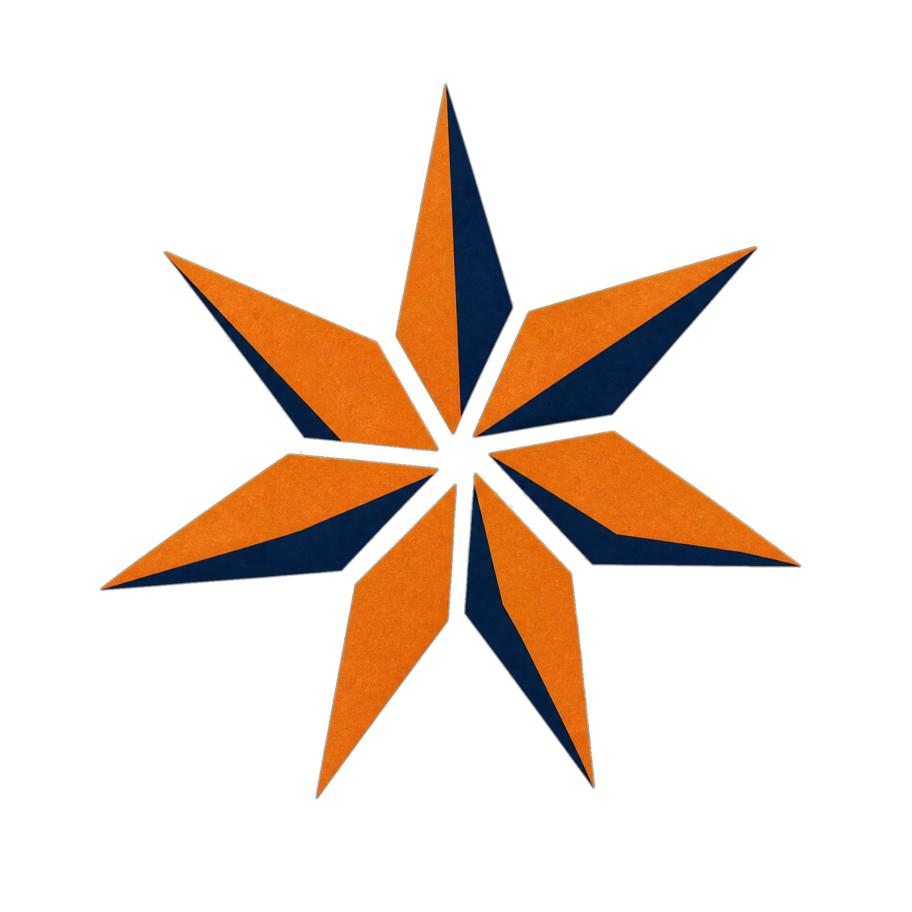
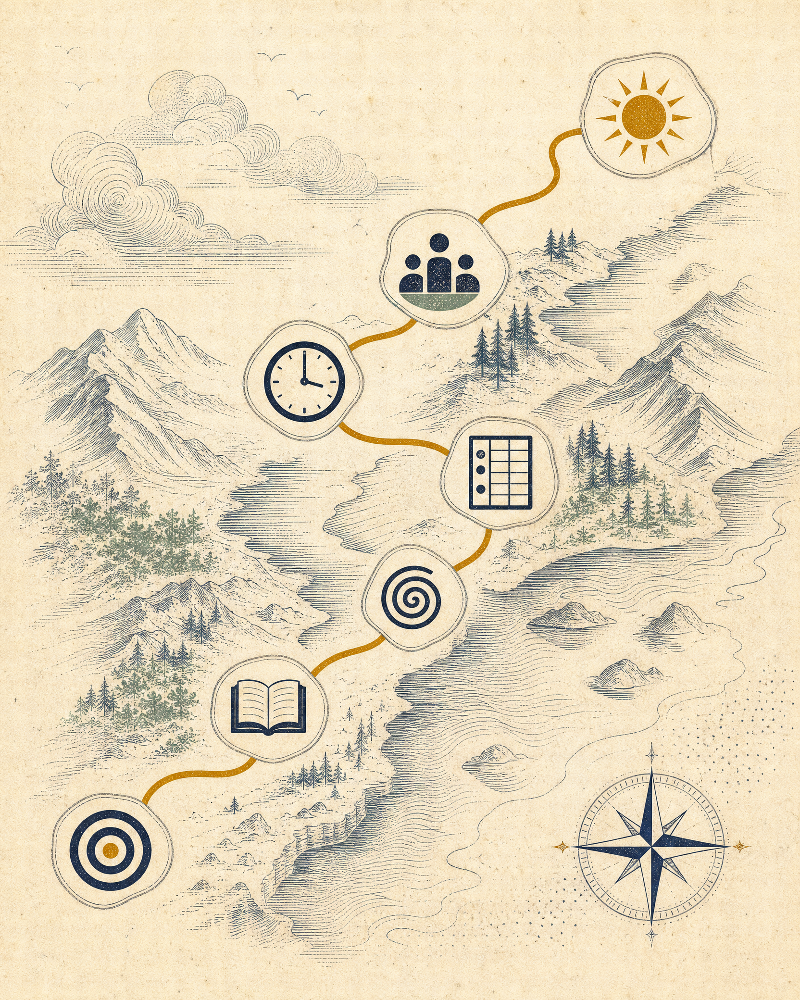
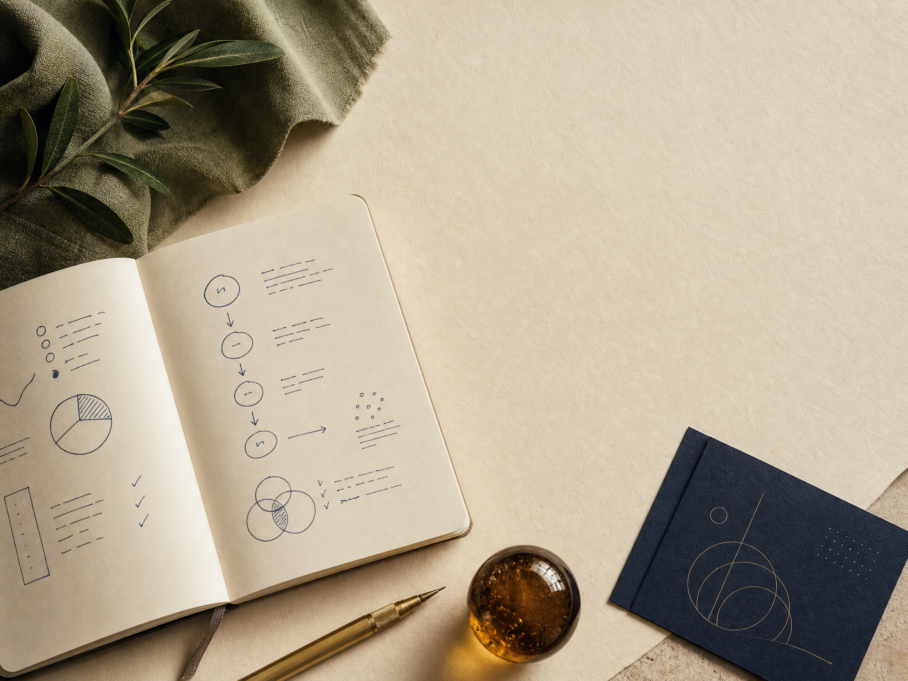
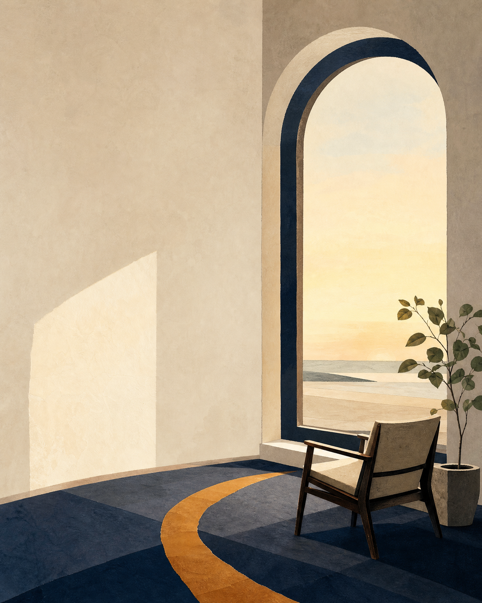
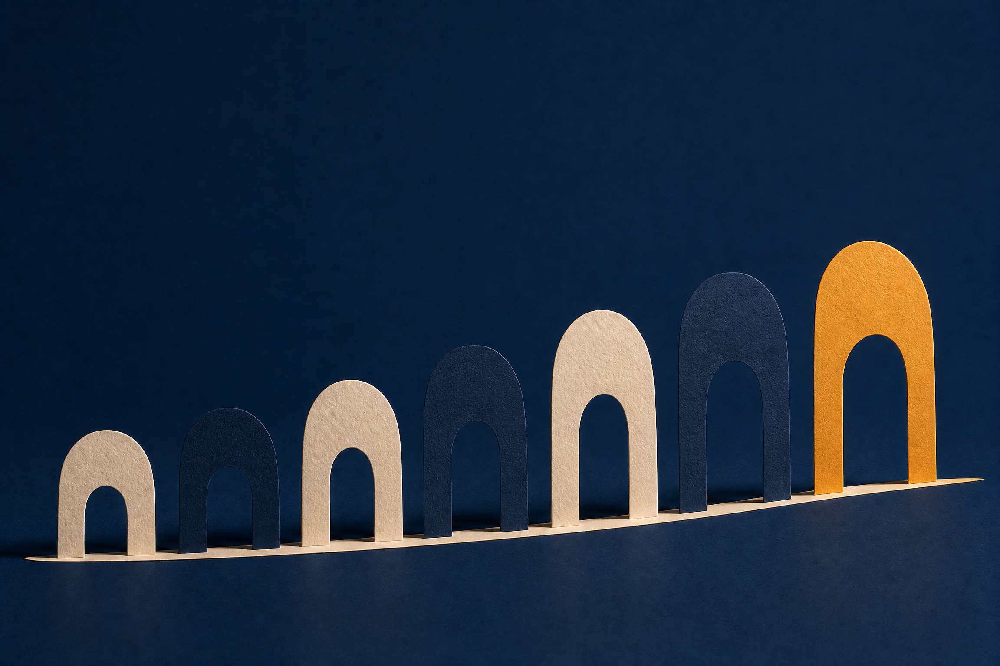

01
Конструктор на цел
От желание към първа стъпка
Твоята карта ще се появи тук

СедемстратегииУчебна траектория 01—07
Преведи седемте идеи на Джим Рон в малки, ясни действия за целите, времето, финансите и начина, по който живееш.
Не е курс за бързи обещания. Това е работна тетрадка за последователност.
От книга към действие
Тази разлика е малка днес и огромна след година. Затова всеки урок тук завършва с конкретна стъпка, която можеш да запишеш и да повториш.
Седем принципа. Един личен маршрут.
Можеш да започнеш от всяка стратегия. За по-подреден път започни от целите и продължи надолу по траекторията.

Език за действие
Кратки определения на понятията, които се срещат в книгата и в уроците. Те са обяснени за прилагане, не за зубрене.
Действие днес
Конструктор на цел
Твоята карта ще се появи тук

Добрият план не е строг. Той дава място на важното.
Време
Виж колко пространство остава, преди да решиш, че „нямаш време“.
Финанси
Ориентир за разговор със себе си, не финансов съвет.
Фокус
Не запълвай списъка. Избери действия, които подкрепят най-важното ти сега.

Пауза за размисъл
Кое малко действие вече знаеш, че ще направи деня ти по-добър?
Бележките остават само на това устройство.
Събери нишките
Отвори първата стратегия, за да направиш началото видимо.
Кратка самооценка
Не е изпит. Отговорите ти само показват към коя идея може да се върнеш сега.
Твоят следващ ход